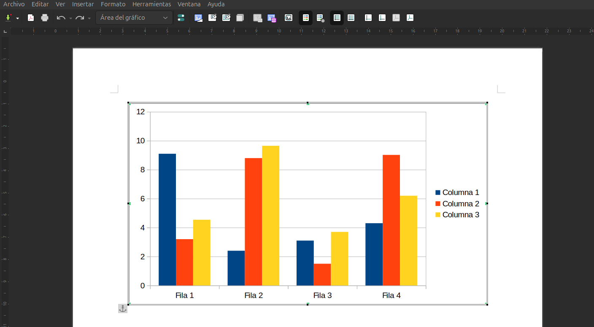
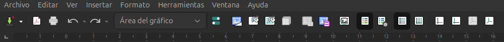

3.2. Gràfics
Gràfics Estadístics
LibreOffice Writer inclou un mòdul de gràfics que permet generar i personalitzar gràfics estadístics directament en els documents. Aquest mòdul ofereix funcions similars a les de LibreOffice Calc, fent que l'ús de gràfics a Writer sigui senzill i eficient. Els gràfics es poden crear a partir de taules de dades i s'adapten automàticament al contingut inserit.
Tipus de Gràfics
Els gràfics que es poden generar en LibreOffice Writer inclouen una àmplia varietat de tipus, segons les necessitats de representació visual de les dades:
- Gràfic de columnes: Adequat per a comparar categories diferents o mostrar canvis en el temps.
- Gràfic de barres: Similar al de columnes, però amb les barres disposades horitzontalment, ideal per a visualitzar diferències entre grups.
- Gràfic de línies: Mostra l'evolució d'una sèrie de dades al llarg del temps o altres variables contínues.
- Gràfic circular: Ideal per a visualitzar parts d'un tot, on cada secció representa una proporció del total.
- Gràfic de dispersió: Utilitzat per a visualitzar la relació entre dues variables diferents, mostrant punts de dades en un gràfic de coordenades.
- Gràfic d'àrea: Similar al de línies, però amb l'àrea sota la línia ombrejada, permetent una comparació visual més clara de diferents sèries de dades.
Com Crear un Gràfic en Writer
Per generar un gràfic estadístic en un document de Writer, seguiu aquests passos:
- Inserir una taula de dades: Abans de crear un gràfic, necessiteu tenir una taula de dades en el vostre document. Podeu crear una taula de dades des de zero o importar-la des d'un altre document.
- Seleccionar les dades: Marqueu les cel·les que contenen les dades que voleu representar gràficament.
- Crear el gràfic:
- Aneu a Inserir > Gràfic al menú superior.
- S'obrirà l'assistent de creació de gràfics, que us guiarà en la selecció del tipus de gràfic.
- Personalitzar el gràfic: Després de triar el tipus de gràfic, podreu personalitzar-ne els elements, com ara títols, etiquetes, llegendes i colors.
- Finalitzar: Feu clic a Finalitza per inserir el gràfic generat en el document.
Personalització del Gràfic
Després de crear el gràfic, LibreOffice Writer permet fer diverses modificacions per adaptar-lo a les vostres necessitats. Alguns dels elements que podeu personalitzar inclouen:
- Títol: Podeu afegir un títol descriptiu al gràfic, per clarificar la informació que mostra.
- Eixos: Els eixos X i Y poden tenir títols específics i unitats per donar més detalls sobre les dades representades.
- Escala i intervals: És possible ajustar l'escala dels eixos i els intervals de les marques, segons la precisió que necessiteu en la visualització de les dades.
- Línies de tendència: En gràfics de línies i de dispersió, podeu afegir línies de tendència per mostrar la trajectòria general de les dades.
- Colors i estils: Els colors dels elements del gràfic, com les barres o les línies, es poden modificar per donar-los més claredat o adaptar-se a l'estil visual del document.

Integració amb Calc
Si ja disposeu de dades a LibreOffice Calc, podeu copiar i enganxar els gràfics creats en Calc directament al vostre document de Writer. Aquesta funció manté la interactivitat del gràfic, de manera que si es modifica el gràfic original a Calc, el gràfic de Writer es pot actualitzar automàticament.
Exemple pràctic: Creació d'un gràfic de columnes
Suposem que voleu crear un gràfic de columnes per mostrar les vendes mensuals d'una empresa. Heu de seguir aquests passos:
- Crear la taula de dades amb les vendes mensuals:
Mes | Vendes Gener | 5000 Febrer | 7000 Març | 6500 Abril | 8000
- Seleccionar la taula de dades i anar a Inserir > Gràfic.
- Trieu el tipus de gràfic Columnes.
- Afegiu un títol com Vendes mensuals del 2024 i etiqueteu els eixos (Eix X: Mesos, Eix Y: Vendes en euros).
- Feu clic a Finalitza i el gràfic de columnes es mostrarà dins del document.

Nota
"És important adonar-nos que quan entrem a editar el gràfic canvia el menu superior, ja que s'adequa al context i ens permet realitzar l'edició del gràfic que acabem de crear"

Avantatges de l'ús de Gràfics
Els gràfics a LibreOffice Writer ofereixen nombrosos avantatges:
- Claredat visual: Faciliten la comprensió de dades numèriques o estadístiques, oferint una representació visual atractiva i clara.
- Integració senzilla: Poden crear-se directament dins de Writer o importar-se fàcilment des d'altres aplicacions de LibreOffice com Calc.
- Personalització avançada: Els gràfics es poden adaptar a les necessitats estètiques i funcionals del document.
- Actualització automàtica: Els gràfics vinculats amb fulls de càlcul poden actualitzar-se automàticament en modificar les dades originals.
Amb aquests recursos, els gràfics estadístics a LibreOffice Writer són una eina potent per a la presentació de dades de manera visualment impactant i fàcil d'entendre.